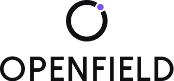

Light
Dark
Primary horizontal
Symbol and wordmark on one line. The default lockup wherever width allows.
openfield-primary.svgopenfield-dark.svgBrand identity · Logo system
The identity for OPENFIELD, a digital agency for websites, interfaces and brands. One ring, one opening, one accent colour. Built to look the same on a favicon and on a building.
The symbol is a single ring, the O of OPEN, drawn with one opening. Through it, a bead steps out into the open field: an idea leaving the frame. Nothing else is added.
Every file is true vector, transparent, and drawn from the same proportions. Choose the lockup by available space, the colourway by background.
Symbol and wordmark on one line. The default lockup wherever width allows.
openfield-primary.svgopenfield-dark.svg

For square and portrait formats, social headers, covers.
openfield-stacked.svgopenfield-stacked-dark.svgProfile images, app icon artwork, watermarks. Never place beside the full lockup.
openfield-icon.svgopenfield-icon-dark.svg

A simplified symbol for 16 × 16: heavier ring, larger bead, a wider opening. Shown at true pixel sizes; the SVG switches to white and lavender in dark browser themes.
favicon.svgCustom-drawn capitals, outlined. For tight horizontal strips and co-branding.
openfield-wordmark.svgopenfield-wordmark-white.svgOne colour only: pure black or pure white. The bead stays separate thanks to the opening.
openfield-monochrome.svgopenfield-monochrome-white.svgGive the mark room. Clear space is half the height of the capitals, measured on every side, and the opening is never covered.
A restrained palette where contrast does the work. Purple is an accent, never a background.
Primary
Wordmark, ring, text. The brand’s anchor.
Reversed logo, surfaces, breathing room.
The one accent. The bead, key actions, a single highlight.
Secondary
The accent on dark backgrounds; secondary highlights.
Dark surfaces, cards on black, secondary text on light.
Page and panel backgrounds, dividers.
On light, purple.
Electric Purple is 4.8:1 on white, so it passes for text and graphics. Use it sparingly anyway: it is the accent, not the voice.
On dark, lavender.
Electric Purple is only 3.9:1 on Deep Black. Soft Lavender reaches 7.0:1, so the accent shifts to it on dark backgrounds and in the dark favicon.
The wordmark is custom geometric capitals, outlined so it never depends on a font. Everything around it is set in Manrope.
Wordmark
Capitals built from lines and true arcs on a single grid: a perfect circle for O, semicircular bowls for P and D, one stem weight throughout, arms a touch lighter to look equal. Letterspacing is balanced by white area, then tracked +5%.
Brand typeface · Manrope
Open fields, open minds.
Design that makes room for what comes next.
Manrope Regular at 16/1.6 for running text. Headlines in ExtraBold with −4% tracking; labels in Bold capitals with +14% tracking.
Brand identity
The mark is strong because it is simple. Keep it that way.
All assets live in /public/brand/. Plain SVG: no raster, no filters, no live text, no external dependencies.
| File | Use | Default size |
|---|---|---|
openfield-primary.svg | Primary horizontal lockup, full colour. Master artwork for light backgrounds. | 449 × 66 |
openfield-horizontal.svg | Horizontal lockup that follows CSS: ring + wordmark use currentColor, bead uses --openfield-accent. | 449 × 66 |
openfield-stacked.svg | Vertical lockup, symbol above wordmark, full colour. | 356 × 166 |
openfield-icon.svg | Standalone symbol for avatars, social and app contexts. | 120 × 120 |
favicon.svg | Simplified 32 × 32 symbol. Heavier ring, larger bead; switches to white + lavender in dark browser themes. | 32 × 32 |
openfield-light.svg | Light-background lockup (same artwork as primary, semantic alias for themes). | 449 × 66 |
openfield-dark.svg | Dark-background lockup: white wordmark, Soft Lavender bead. | 449 × 66 |
openfield-monochrome.svg | Single colour, pure black. For print, stamps, embossing, fax-grade reproduction. | 449 × 66 |
openfield-monochrome-white.svg | Single colour, pure white, for dark or photographic backgrounds. | 449 × 66 |
openfield-wordmark.svg | Wordmark only (and -white variant). | 356 × 50 |
openfield-stacked-dark.svg | Vertical lockup for dark backgrounds. | 356 × 166 |
openfield-icon-dark.svg | Symbol for dark backgrounds. | 120 × 120 |
openfield-icon-monochrome.svg | Symbol in one colour (and -white variant). | 120 × 120 |
openfield-stacked-monochrome.svg | Vertical lockup in one colour. | 356 × 166 |